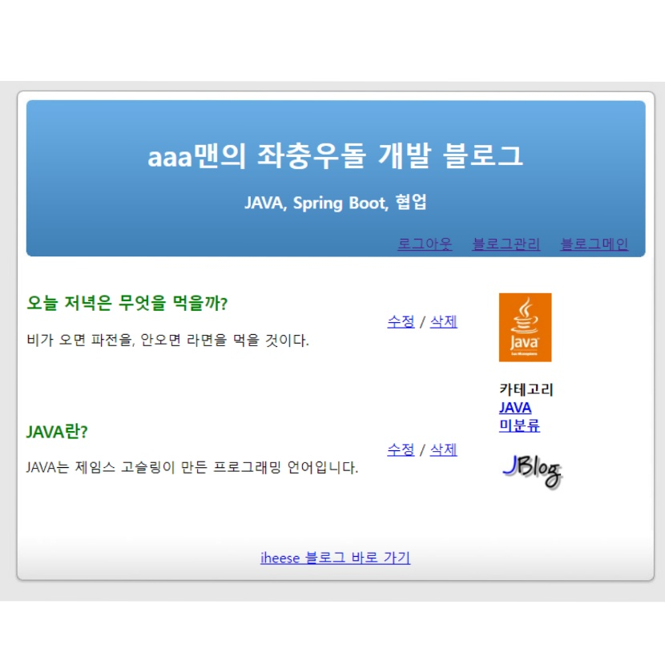
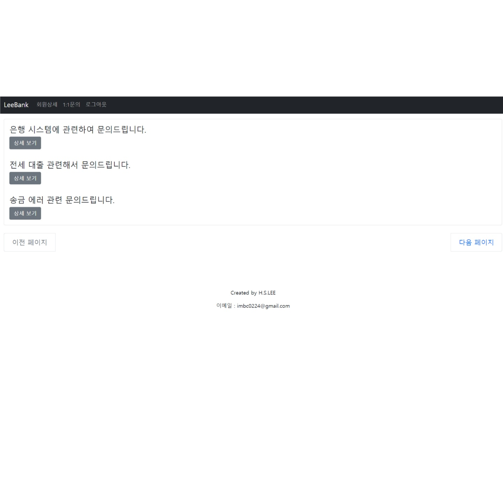
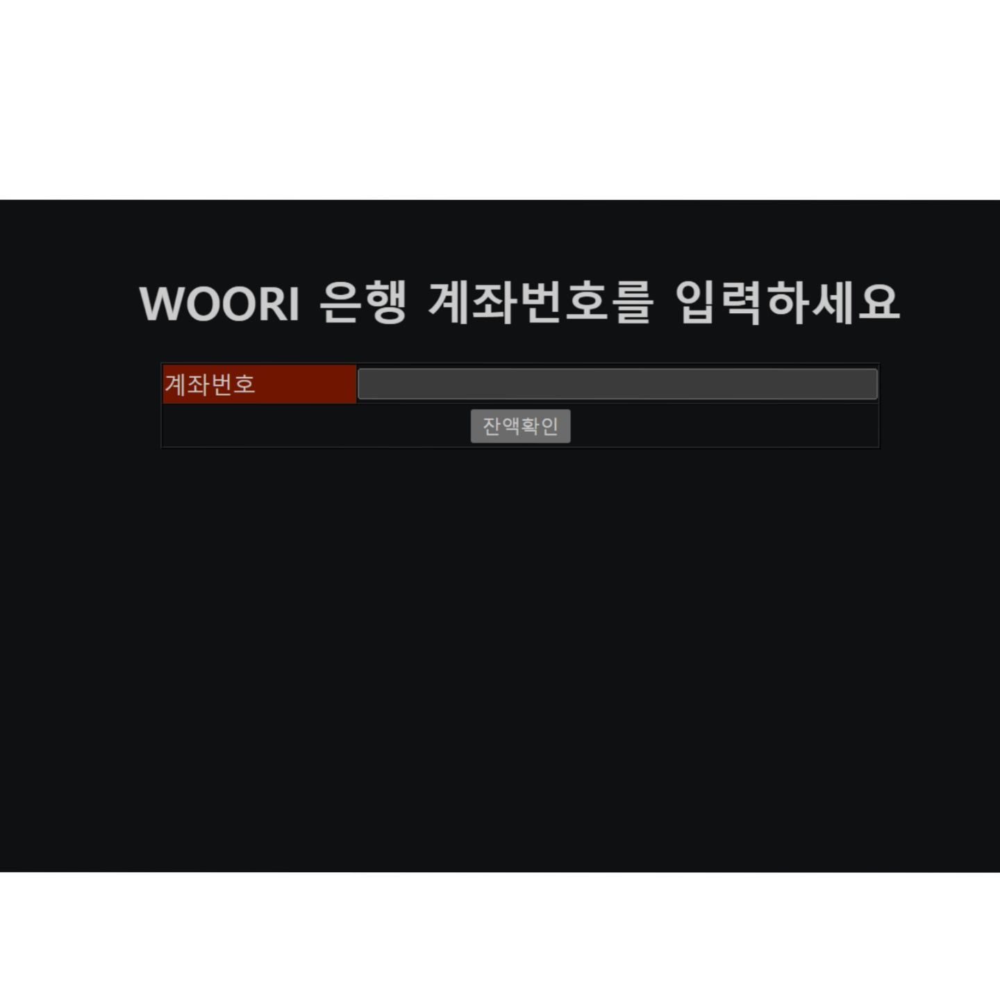
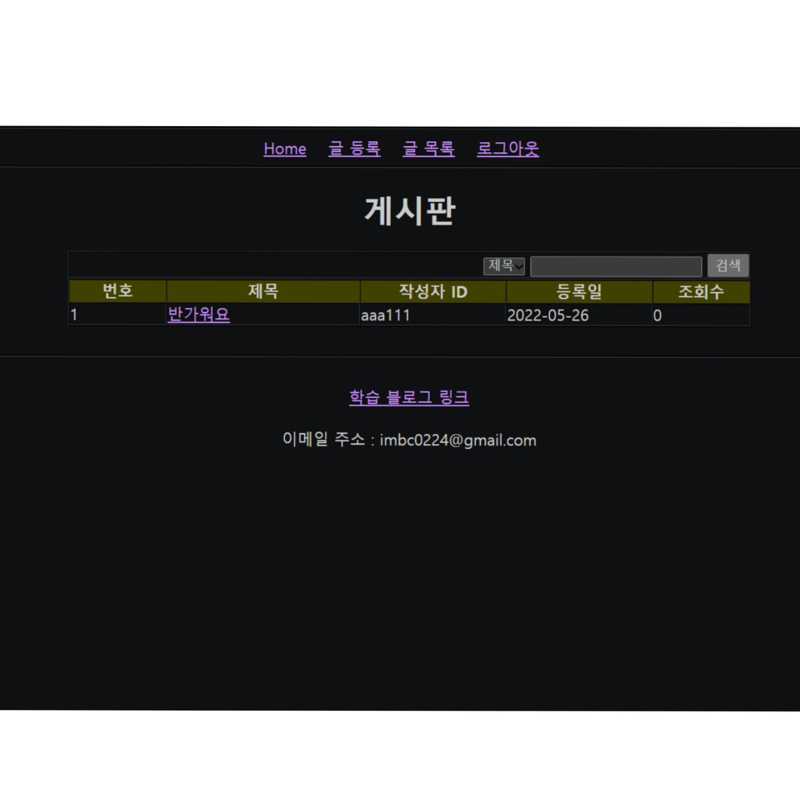
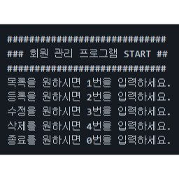

Spring Boot와 JPA를 이용한 블로그 프로젝트입니다.
블로그, 카테고리, 글 기능이 있는 블로그입니다.
● JPA의 매핑 기능을 사용하지 않고 직접 필드에 참조할 id 필드를 추가하여 구현했습니다. 쿼리문을 예상할 수 있게 되었고 Join 쿼리를 사용하지 않아 성능을 좋게 했습니다.
● Service, Controller 단에 대한 Test Code를 작성하여 코드의 안정성을 높였습니다.
세부적인 내용은 프로젝트 코드의 README 파일에서 확인하실 수 있습니다.
주요 기술 스택 : Spring Boot, JPA, H2, JUint5
2022.08

Spring Boot, Spring Security, JPA를 이용한 게시판 프로젝트입니다.
회원, 게시판, 댓글 기능이 있는 대출 상담 게시판입니다.
● 라이브러리 관리, 설정을 자동으로 해주어 편하게 프로젝트를 시작하기 위해 Spring Boot를 이용했습니다.
● SQL 쿼리 작성의 반복을 줄여 생산성이 좋고, 엔티티 객체만 수정시 자동으로 DB를 수정해주어 유지보수에 유리한 JPA를 사용했습니다.
● 회원 기능, 특히 로그인 실패 처리를 비교적 쉽고 체계적으로 처리할 수 있는 Spring Security를 사용했습니다.
● 회원 상세 페이지를 구현하여 자신이 작성한 글과 댓글을 확인할 수 있게 했습니다.
● DTO와 Entity를 구분하였고 Service 단에서 변환하는 과정을 거쳤습니다.
세부적인 내용은 프로젝트 코드의 README 파일에서 확인하실 수 있습니다.
주요 기술 스택 : Spring Boot, Spring Security, JPA, H2, JUint5, JQuery, BootStrap, Summernote
2022.07

Spring과 MyBatis를 이용한 계좌 이체 프로젝트입니다.
은행 간 계좌 이체를 처리하고 이체 결과를 보여주는 프로그램입니다.
● 각각의 목적성에 맞게 코드를 나누어 유지보수와 확장성을 좋게 하기 위해 Spring MVC 모델을 사용했습니다.
● JDBC 연결 코드를 줄이고 SQL 쿼리를 분리해서 관리, 사용하기 위해 MyBatis를 사용했습니다.
● Service 로직에서 예외가 발생하면 롤백되게 AOP를 이용해 Transaction을 구현했습니다.
세부적인 내용은 프로젝트 코드의 README 파일에서 확인하실 수 있습니다.
주요 기술 스택 : Spring, MyBatis, H2
2022.06

JSP, Servlet을 이용한 게시판입니다.
회원 기능, 게시판 기능, 조회수, 관리자 기능이 있는 게시판입니다.
● HTML 위에서 동적 웹사이트를 만들기 위해 JSP를 사용했습니다.(EL, JSTL 사용)
● JSP로부터 요청값을 받아 DispatcherServlet을 통해 로직을 수행하는 MVC 모델을 적용했습니다.
● 게시물의 조회수 기능을 추가했고 제목과 내용별로 검색이 가능하게 했습니다.
● 글 수정은 자신의 글만 가능합니다. 일반 회원은 글 삭제가 불가하며 관리자 회원은 글 삭제가 가능하게 했습니다.
● DispatcherServlet 앞에 filter를 적용하여 utf-8 인코딩 처리를 하였습니다.
세부적인 내용은 프로젝트 코드의 README 파일에서 확인하실 수 있습니다.
주요 기술 스택 : JSP, Servlet, H2
2022.05

회원 관리 프로그램입니다.
회원 기능을 콘솔에서 확인할 수 있는 프로그램입니다.
● JDBC를 이용해 H2 DB에 접근하고 회원 CRUD 기능을 구현하였습니다.
● 아이디, 전화번호 유효성 로직, 예외 처리를 추가했습니다.
세부적인 내용은 프로젝트 코드의 README 파일에서 확인하실 수 있습니다.
주요 기술 스택 : Java, JDBC, H2
2022.04